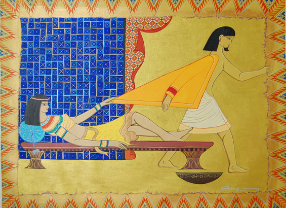

The Hyksos’ (chiefs of foreign lands) were Semitic invaders of Egypt, Bedouins from the Arabian Desert, who ruled from about 1720 to 1580 BC. They introduced a number of technological innovations from Asia, like the horse-drawn chariot, the battering ram and the composite bow. The period of their rule was a time of peace and prosperity in Egypt. They had their own gods but did not impose them on the Egyptians. They maintained ancient Egyptian as the official language of the government and allowed many Egyptians such as Potiphar to serve in the high levels of the government. But they were unable to stem the tide of Egyptian nationalism.When they were finally overthrown, a new king, who did not know about Joseph, came to power in Egypt (Exodus 1:8). He would have been one of the native Egyptian Pharaohs who, as part of the Hyksos purge, absolutely refused to allow the Jews to live in the choice region of Goshen (45:10). He said: We must deal shrewdly with them or they will become even more numerous and, if war breaks out, will join our Asian enemies, fight against us and leave the country (Exodus 1:10).
Joseph does not utter a word in defense against the false accusation.
"He was oppressed, and He was afflicted, yet He opened not His mouth."
Isaiah 53:7
"Answerest thou nothing? what is it which these witness against thee?
But Jesus held his peace." Matthew 26:62-63